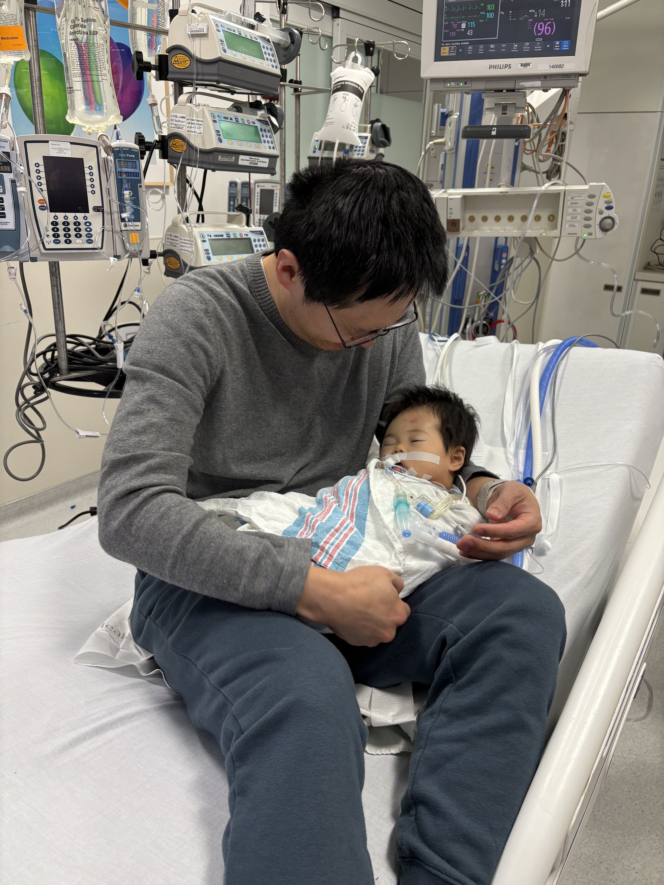

Author: Yih-Chun
This is the final part of a 5-part series from the car accident until Cece was (I believe) pronounced dead. Part 1 covers from my home to the Carle ER. Part 2 covers until she gets wheeled up to Carle's Pediatric ICU. Part 3 ends with us on Carle's helipad. Part 4 ends with us in the Emergency Room of St. Louis Children's.
In the emergency room, they had to override their limits on pressers because AirLife's limits were higher than the limits at St. Louis Children's. They intended to enroll her in the MATIC-2 trial but decided otherwise as she seemed to not need a transfusion at the time. They also took Cece off of vasopressin and gave her mannitol to manage her intracranial pressure. The rest of the time in the ER seemed mostly uneventful, but it took a fair amount of time; we left that room around 11:47pm. They explained they wanted to take a CT because they wanted to see what progression there was on the injury since Carle's last imaging.
The social worker and I sat in the waiting area while Cece was being scanned. After the scan, the neurosurgery resident came out to talk with me. He and his attending felt that surgery was not needed at the time, and they would manage her medically. The attending would be in in the morning to take another look, and the Peds ICU team would continue to monitor Cece's intracranial pressure and call neurosurgery if they felt it was necessary. I had a sinking feeling: if Carle didn't feel that this was medically manageable, and St. Louis Children's neurosurgery was turning her away, did this mean that we were reaching the end? "No surgery tonight. Icp stable, ct shows minimal progression. Neuro resident says best case is a long recovery" I texted Evelyn at 12:09am.
Off to the Peds ICU we went. They got her settled into her room and started switching her equipment over to the in-room equipment. The room was large but a swarm of activity, with so many medical professionals that there were several people out in the hallway and with a big cart of medicine. Chenxi arrived and I sent the social worker down to pick her up. Once activity calmed a bit, the attending, Dr. Spyridakis, asked to talk with me. He walked me to a conference room down the hallway and around the corner from Cece's room. He told me that Cece had suffered a "devastating brain injury" and that recovery was extremely unlikely. He told me that all the system failures, most significantly the heartbeat, but also the lack of reflexes, originated from this injury. "Are you suggesting DNR?" I asked him. He told me that we have a bit of time, and he doesn't want to pressure me at all, but that it is very likely that in the next few hours, there would be an event, and that was not the time to start thinking about these questions. He told me that in his medical opinion, DNR made sense. He also mentioned that we should consider our position on organ donation.
I tried calling Evelyn around 12:49am; she called me as soon as she got back from her MRI. We decided to put her on DNR. The doctors and nurses started wrapping her up so I could hold her, but just then, we got word that Evelyn might get discharged that night from Carle, and she might be able to drive over. We decided to try to keep Cece alive until Evelyn could come to say goodbye. I had a precious 5 minutes with Cece as she was all bundled up and in her hospital bed. The door was closed and I had my private moment to cry with Cece.
The serenity of that moment was interrupted by an alarm, the doors flew open, staff came in. "Code epi" (epinephrine at code dosage) and bicarb (sodium bicarbonate) was called for at regular intervals. Dr. Spyridakis recommended we try a central line, I agreed to try that. After what seemed like an hour, he called me back out: neither leg could take a central line. There was no blood flow coming out of the line on the left leg, and the right leg had a pressure dressing on it. They were going to try to put in a deep IV to maintain access for medicine. They worked on Cece like this from about 1:15am until 3:49am. "Just hang in there until Evelyn comes" I told Cece. Evelyn left home around 3:30am and started heading towards St. Louis.
At 3:49am, a code was called. CPR began, a defibrillator was connected. They checked the defibrillator: "non-shockable rhythm" someone called. CPR continued with pulse checks every two minutes. They continued with code epi and bicarb. Dr. Spyridakis told me "this is what I was afraid of." At 3:59am I texted Evelyn "Shes been coding for the last 10 min." "Ok. It might be time. I will be there still." she replied. We had a quick call, and she told me that if they can't get someone back in 10-15 minutes, it was likely they couldn't get her back at all. We decided to stop the resuscitation attempts.
At 4:05am, I told the doctor running the code, "at the next pulse check, if there is no pulse, we're done." A while later, a pulse check was called for, no pulse was found, and the medical staff began to leave the room. I held Cece in my arms. Dr. Spyridakis came in with a stethoscope, listened to her from 4:12 until 4:14, gave his condolences, and walked out of the room. I kept holding Cece until Evelyn finally arrived around 6:30am.